🇦🇷 Argentina Adventure — December 2026 / January 2027
4 friends · 26 nights · Dec 9, 2026 → Jan 4, 2027
✏️ Itinerary updated: Mendoza removed. Domestic flights now booked (tickets in docs/) — note the evening EZE → IGR flight on Dec 11 (Flybondi FO5102, arrive 19:55), the IGR → USH connection now confirmed via EZE (not AEP) with a 16:25–20:05 Aerolíneas AR1880 second leg, and the late-night BRC → EZE flight on Jan 2 (Flybondi FO5245, arrive 23:55). Extra night reinvested in Bariloche (now 10 nights) and Buenos Aires departure (now 2 nights).
📋 Contents
- Route Overview
- Day-by-Day Summary
- Domestic Flights
- Car Rentals
- Advance Booking Priorities
- Day-by-Day Itinerary
- Buenos Aires — Days 1–2
- Puerto Iguazú — Days 3–4
- Ushuaia — Days 5–8
- El Calafate — Days 9–11, 14
- El Chaltén — Days 12–13
- Bariloche — Days 15–24
- Buenos Aires Departure — Days 25–26
- Practical Tips
Route Overview
| # | Destination | Dates | Nights |
|---|---|---|---|
| 1 | Buenos Aires | Dec 9–10 | 2 |
| 2 | Puerto Iguazú | Dec 11–12 | 2 |
| 3 | Ushuaia | Dec 13–16 | 4 |
| 4 | El Calafate | Dec 17–19 | 3 |
| 5 | El Chaltén | Dec 20–21 | 2 |
| 6 | El Calafate (return) | Dec 22 | 1 |
| 7 | Bariloche (NYE! 🎉) | Dec 23–Jan 1 | 10 |
| 8 | Buenos Aires (departure) | Jan 2–3 | 2 |
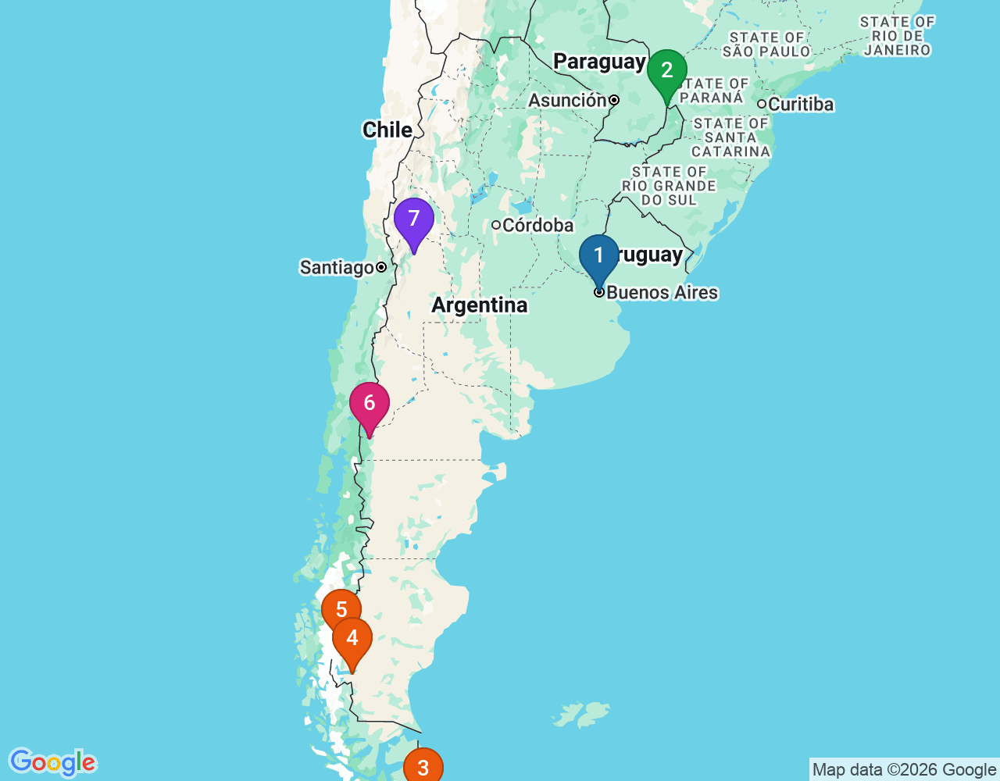
View Full Route on Google Maps ↗Day-by-Day Summary
| Day | Date | Destination | Nights | Car Rental | What to Do | Notes |
|---|---|---|---|---|---|---|
| 1 | Wed Dec 9 | Buenos Aires | 2 | Arrival at EZE (05:40); immigration & customs; transfer to hotel; rest; neighbourhood stroll; parrilla dinner | Pre-book remise (~$25–35 USD); Palermo or Recoleta hotel | |
| 2 | Thu Dec 10 | Buenos Aires | Plaza de Mayo → Casa Rosada → San Telmo → La Boca/Caminito → Recoleta Cemetery; optional tango show | Flight to Iguazú tomorrow is evening (EZE 18:05) — enjoy a fuller day, but budget a longer EZE transfer | ||
| 3 | Fri Dec 11 | Puerto Iguazú | 2 | Bonus free time in Buenos Aires; evening flight EZE → IGR (18:05–19:55, Flybondi FO5102); late dinner in Puerto Iguazú | Falls sightseeing now starts Dec 12 — evening arrival tonight | |
| 4 | Sat Dec 12 | Puerto Iguazú | Full day at the falls — Argentine side (Upper & Lower Circuits, Garganta del Diablo); optional Macuco boat safari | Only one full falls day now; rain poncho essential; Brazilian side squeezed out (see note) | ||
| 5 | Sun Dec 13 | Ushuaia | 4 | Travel day: fly IGR → EZE (Flybondi FO5101) → USH (Aerolíneas AR1880, 16:25–20:05); dinner near hotel | Connects via Ezeiza (EZE), not AEP; arrival now 20:05 — earlier than previously planned | |
| 6 | Mon Dec 14 | Ushuaia | 🚗 Pick up | Martillo Island penguin land-walk excursion; Beagle Channel scenic drive; optional Presidio museum | Pick up only if Martillo tour allows; otherwise wait until Day 7 | |
| 7 | Tue Dec 15 | Ushuaia | 🚗 Ushuaia | Cerro Martial hike OR kayaking in Beagle Channel OR Lago Escondido/Fagnano scenic drive; artisan market | Lago Fagnano drive is the easy, scenic option — save legs for El Chaltén | |
| 8 | Wed Dec 16 | Ushuaia | 🚗 Return | Tierra del Fuego National Park: Senda Costera walk, Lapataia Bay (end of Ruta 3), End of the World Train; return rental car | Return car late afternoon before tomorrow's flight | |
| 9 | Thu Dec 17 | El Calafate | 3 | (optional) | Fly USH → FTE (Flybondi FO5540; ~15:20–16:40, confirm exact times on ticket); Lago Argentino lakeside walk; dinner | Withdraw generous cash now — limited ATMs in El Chaltén |
| 10 | Fri Dec 18 | El Calafate | (optional) | Perito Moreno Glacier full day: pasarelas walkways, calving, guided ice trek (Mini-Trekking or Big Ice) | Self-drive with rental, or guided tour/remise — both work | |
| 11 | Sat Dec 19 | El Calafate | (optional) | Lago Argentino boat excursion: Upsala + Spegazzini glaciers; rest; final cash withdrawal before El Chaltén | Book boat excursion 2–4 weeks ahead | |
| 12 | Sun Dec 20 | El Chaltén | 2 | (optional) | Bus or drive to El Chaltén (~3 hrs); Laguna de los Tres hike (Fitz Roy) — 20 km, 6–8 hrs; or Mirador Fitz Roy (2–3 hrs) | Car gives schedule freedom; bus is reliable and cheap (~$15–20 USD) |
| 13 | Mon Dec 21 | El Chaltén | (optional) | Laguna Torre hike: Cerro Torre views — 18 km, 5–6 hrs; or shorter Chorrillo del Salto waterfall walk | Local craft beer at the microbrewery in the evening | |
| 14 | Tue Dec 22 | El Calafate (return) | 1 | (optional) | Return to El Calafate (~3 hrs); rest; optional Glaciarium museum; shopping | Return rental car if held; flight to Bariloche tomorrow morning |
| 15 | Wed Dec 23 | Bariloche | 9 | 🚗 Pick up | Fly FTE → BRC (09:25–11:10); pick up rental car; Civic Centre; chocolate shops; Nahuel Huapi Lake waterfront | Pick up at BRC airport; AWD/SUV recommended; book 3–4 months ahead |
| 16 | Thu Dec 24 | Bariloche | 🚗 Bariloche | Circuito Chico (~60 km loop): Cerro Campanario viewpoint (chairlift or 35-min hike), Llao Llao Hotel grounds, Puerto Pañuelo | Christmas Eve dinner — reserve a restaurant in advance | |
| 17 | Fri Dec 25 | Bariloche | 🚗 Bariloche | Cerro Tronador + Ventisquero Negro — confirm Christmas Day access first; obey controlled entry/exit windows | AWD essential for the Tronador gravel road | |
| 18 | Sat Dec 26 | Bariloche | 🚗 Bariloche | Circuito Grande (~250 km loop): Lago Nahuel Huapi north shore, Villa La Angostura, Bosque de Arrayanes, Paso Córdoba | Lunch stop in Villa La Angostura | |
| 19 | Sun Dec 27 | Bariloche | 🚗 Bariloche | Cerro Catedral summer lifts + ridge views; optional kayaking on Nahuel Huapi or white-water rafting (Río Manso); optional Cerro Otto cable car | Lifts handle all elevation gain — hike along ridge as much or little as desired | |
| 20 | Mon Dec 28 | Bariloche | 🚗 Bariloche | Free / relax day; optional Cerro Campanario sunrise; Museo de la Patagonia; fondue dinner | Buy chocolates for home: Abuela Goye, Mamuschka, Del Turista | |
| 21 | Tue Dec 29 | Bariloche | 🚗 Bariloche | Seven Lakes Drive to San Martín de los Andes: lakes Correntoso, Espejo, Villarino, Falkner, Machónico, Lácar; lunch in San Martín | Full-day road trip — return via Villa La Angostura if desired | |
| 22 | Wed Dec 30 | Bariloche | 🚗 Bariloche | Light pre-NYE day: Cerro Otto cable car + revolving café OR Isla Victoria + Arrayanes boat excursion; last chocolate shopping | Don't overdo it — big night tomorrow | |
| 23 | Thu Dec 31 | Bariloche | 🚗 Bariloche | NYE: relaxed morning; lakefront Centro Cívico celebration at midnight; massive street party by Nahuel Huapi Lake until dawn | No official fireworks (city ordinance); book NYE dinner well in advance | |
| 24 | Fri Jan 1 | Bariloche | 🚗 Bariloche | New Year's Day: slow morning; recover from NYE; gentle lakeside walk, Museo de la Patagonia, or last chocolate shopping | Keep the rental car — Jan 2 is now a full Bariloche day | |
| 25 | Sat Jan 2 | Bariloche → Buenos Aires | 2 | 🚗 Return | Full final day in Bariloche; return rental car at BRC in the evening; late flight BRC → EZE (21:50–23:55, Flybondi FO5245); near-midnight arrival | Pre-book EZE → hotel transfer (~45–60 min); Palermo/Recoleta hotel |
| 26 | Sun Jan 3 | Buenos Aires | Final day: San Telmo Sunday market, strolling Palermo, last asado and alfajores | Early night — international departure tomorrow | ||
| 27 | Mon Jan 4 | — Departure — | Transfer to EZE (arrive 3 hrs early for international); fly home | Trip ends Jan 4, 2027 — ¡buen viaje! |
✈️ Domestic Flights
| # | Date | Route | Airports | Selected Practical Fare* | Search |
|---|---|---|---|---|---|
| 1 | Dec 11 | Buenos Aires → Puerto Iguazú | EZE → IGR | ✅ Booked — Flybondi FO5102 · nonstop · 18:05–19:55 | — |
| 2a | Dec 13 | Puerto Iguazú → Buenos Aires | IGR → EZE | ✅ Booked — Flybondi FO5101 · nonstop · times TBC (verify on ticket) | — |
| 2b | Dec 13 | Buenos Aires → Ushuaia | EZE → USH | ✅ Booked — Aerolíneas AR1880 · nonstop · 16:25–20:05 | — |
| 3 | Dec 17 | Ushuaia → El Calafate | USH → FTE | ✅ Booked — Flybondi FO5540 · nonstop · times TBC (verify on ticket) | — |
| 4 | Dec 23 | El Calafate → Bariloche | FTE → BRC | ✅ Booked — Aerolíneas AR1695 · nonstop · 09:25–11:10 | — |
| 5 | Jan 2 | Bariloche → Buenos Aires | BRC → EZE | ✅ Booked — Flybondi FO5245 · nonstop · 21:50–23:55 | — |
Note on IGR → USH: This is a same-airport connection through Ezeiza (EZE) — Flybondi FO5101 (IGR → EZE) followed by Aerolíneas AR1880 (EZE → USH, 16:25–20:05). All four travellers' e-tickets are in docs/. Arrival in Ushuaia (20:05) is about 1h35 earlier than previously planned.
All 5 domestic flights are booked — tickets and receipts are in docs/. Flights 1 and 5 are on Flybondi and both route through Ezeiza (EZE), not Aeroparque (AEP) as an earlier note assumed — this affects transfer times on Dec 11 and Jan 2 (see day notes below). ⚠️ The Jan 2 flight was renumbered from FO5249 to FO5245 by the airline after booking — double-check your boarding pass shows FO5245. Flights 2a and 3 (FO5101, FO5540) have confirmed operators/flight numbers but no departure/arrival times on the receipt — verify against the e-ticket or airline app.
* Baggage note: Flights 1, 2a, 3, and 5 are on Flybondi, a low-cost carrier — checked/carry-on baggage is not included by default (confirmed on the Dec 17 USH→FTE receipt: "No free baggage allowance," with a 20kg checked bag purchased separately per traveller for ~$40–50 each). Confirm baggage add-ons are in place for every traveller on every Flybondi leg.
Airlines: Aerolíneas Argentinas (most reliable), JetSMART, Flybondi (cheaper). Book all flights early — December/January is peak season.
🚗 Car Rental Summary
| Destination | Dates | Days | Why Essential |
|---|---|---|---|
| Ushuaia | Dec 14 or 15–16 | 2–3 | Start Dec 14 only if the booked Martillo excursion provides transport or leaves time for post-tour pickup; otherwise pick up Dec 15. Return late afternoon Dec 16 after Tierra del Fuego NP |
| El Calafate (optional) | Dec 17–22 | 6 | Self-drive to Perito Moreno; drive to/from El Chaltén on your own schedule |
| Bariloche | Dec 23 (~11:30) – Jan 2 (~20:00) | 11 | Circuito Chico, Seven Lakes / Circuito Grande, Cerro Tronador; pick up after the 11:10 BRC arrival, return by ~20:00 before the 21:50 flight |
Tip: At Bariloche and El Calafate, book an AWD/SUV if possible — the Tronador road and some sections of RN40 toward El Chaltén are unpaved gravel. The El Calafate rental is optional: the bus is reliable and cheap, but a car gives you total freedom over timing and stops.
⚠️ Advance Booking Priorities
Book these before anything else:
- 🏨 Bariloche NYE hotel — ✅ Booked.
- ✈️ All 5 domestic flights — ✅ Booked (Flybondi + Aerolíneas). Confirm baggage add-ons and exact times on each ticket.
- 🚗 Car rentals (Ushuaia, El Calafate optional, Bariloche) — AWD/SUV vehicles run out fast in peak summer. Book 3–4 months ahead, especially the Bariloche rental covering NYE through the Jan 2 airport drop-off.
- 🧊 Perito Moreno Ice Trek (Mini-trekking or Big Ice) — Book 2–3 months ahead.
- 🐧 Martillo Island penguin land-walk excursion (Ushuaia) — Controlled, limited-capacity experience; expect Magellanic and Gentoo penguins, with king penguins only an occasional sighting. Book 1–2 months ahead.
- ⛵ Lago Argentino boat excursion (Upsala + Spegazzini glaciers) — Popular full-day tour; book 2–4 weeks ahead in January peak season.
Day-by-Day Itinerary
🏙️ Buenos Aires
Dec 9–10 · 2 nights
"The Paris of South America" — tango, steak, grand boulevards, and European-style architecture
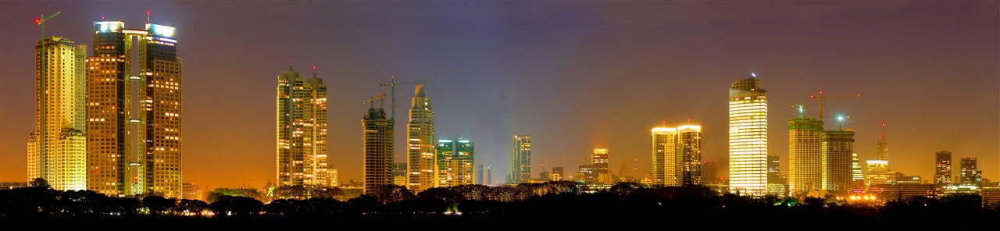 |
|
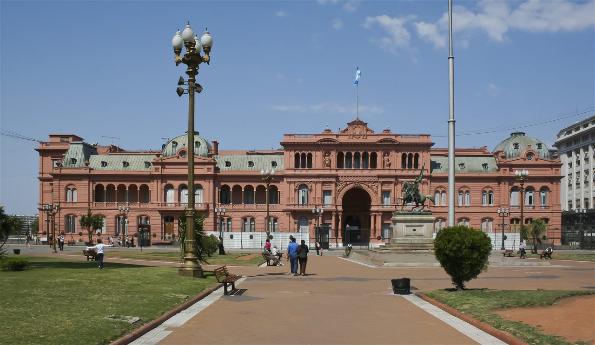 |
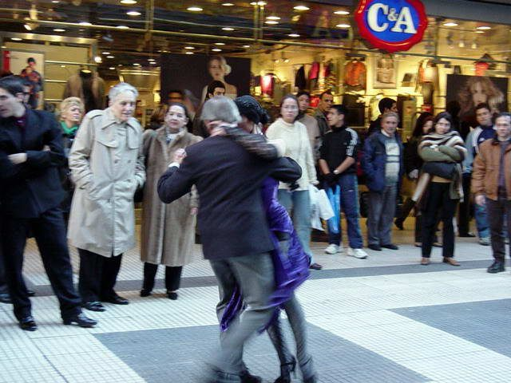 |
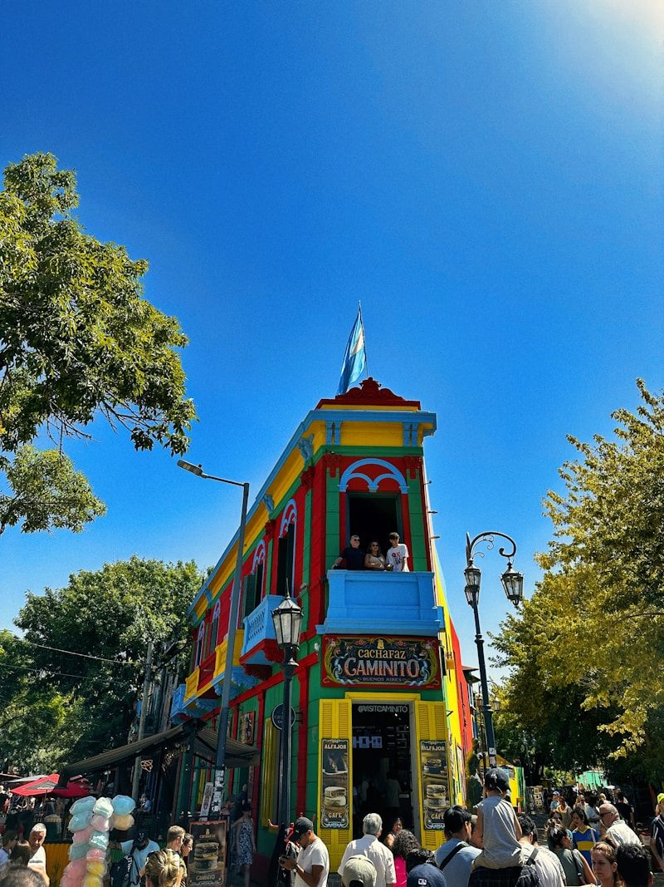 |
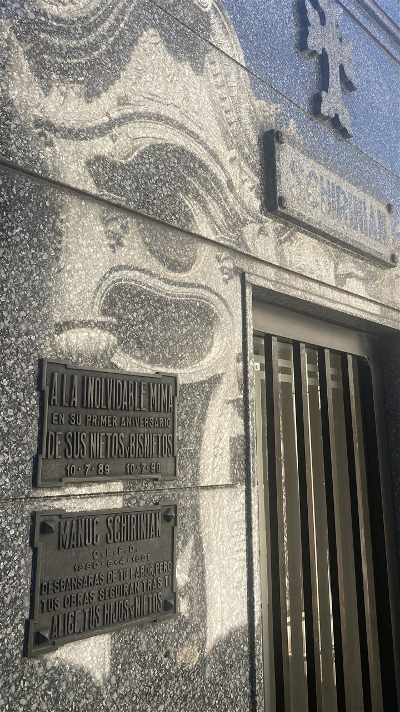 |
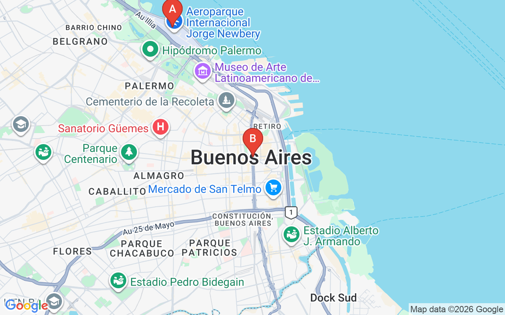
View on Google Maps ↗Day 1 · Wednesday, Dec 9 — Arrival
- 05:40 — Land at Ministro Pistarini International Airport (EZE)
- Immigration & customs: Allow 1–2 hours. Have accommodation address ready.
- Transfer: Pre-book a remise (private car) or use the official taxi stand — ~45 min, ~$25–35 USD to Palermo/Recoleta. Avoid unofficial taxis.
- Morning: Check in early if possible; otherwise store bags and get breakfast at a café.
- Afternoon: Rest and recover. Stroll around your neighbourhood (Palermo or Recoleta).
- Evening: First dinner at a parrilla (Argentine steakhouse). Order a bife de chorizo or ojo de bife and a bottle of Malbec. You have arrived.
| Stay | Hotel in Palermo or Recoleta |
| Tip | Palermo = trendy bars/restaurants; Recoleta = elegant, central |
Day 2 · Thursday, Dec 10 — Sightseeing
- Morning: Walk from Plaza de Mayo (the political heart of Argentina) → Casa Rosada (the Pink House) → Buenos Aires Metropolitan Cathedral → stroll south through the historic Montserrat quarter to San Telmo.
- Afternoon: Take a taxi to La Boca / Caminito — the colourful, Genoese-influenced neighbourhood with street art and tango dancers. (Do not walk there from San Telmo — take a cab and stay within the main tourist area.)
- Late afternoon: Recoleta Cemetery — monumental mausoleums, final resting place of Eva Perón (Evita). Walk through the elegant Recoleta neighbourhood.
- Optional culture add-on: If timing works, add a guided visit to Teatro Colón before dinner rather than trying to squeeze in another neighbourhood.
- Evening: Optional tango dinner show (highly recommended — try Café de los Angelitos or El Viejo Almacén), or dinner in Palermo Hollywood.
- No early rush tomorrow: The flight to Iguazú is in the evening (Dec 11), so you have a bonus half-day in Buenos Aires.
| Stay | Hotel in Palermo or Recoleta |
| Note | The Dec 11 flight to Iguazú departs in the evening from Ezeiza (EZE) — you have a bonus free day tomorrow, but budget a longer transfer than a downtown airport would need |
🌊 Puerto Iguazú
Dec 11–12 · 2 nights
Wider than Niagara, taller than Victoria Falls — one of the world's great natural wonders
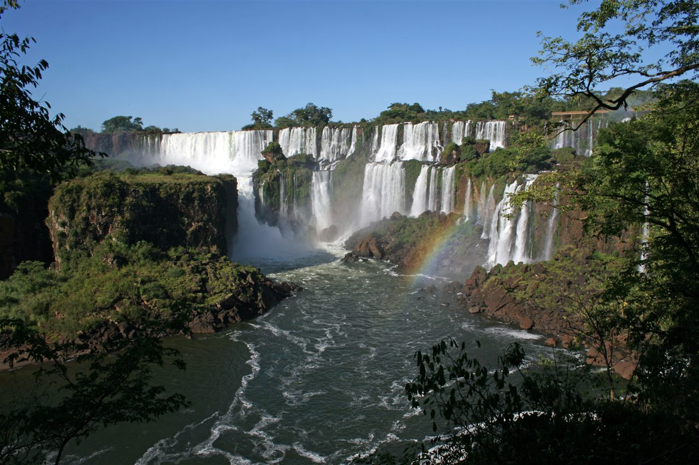 |
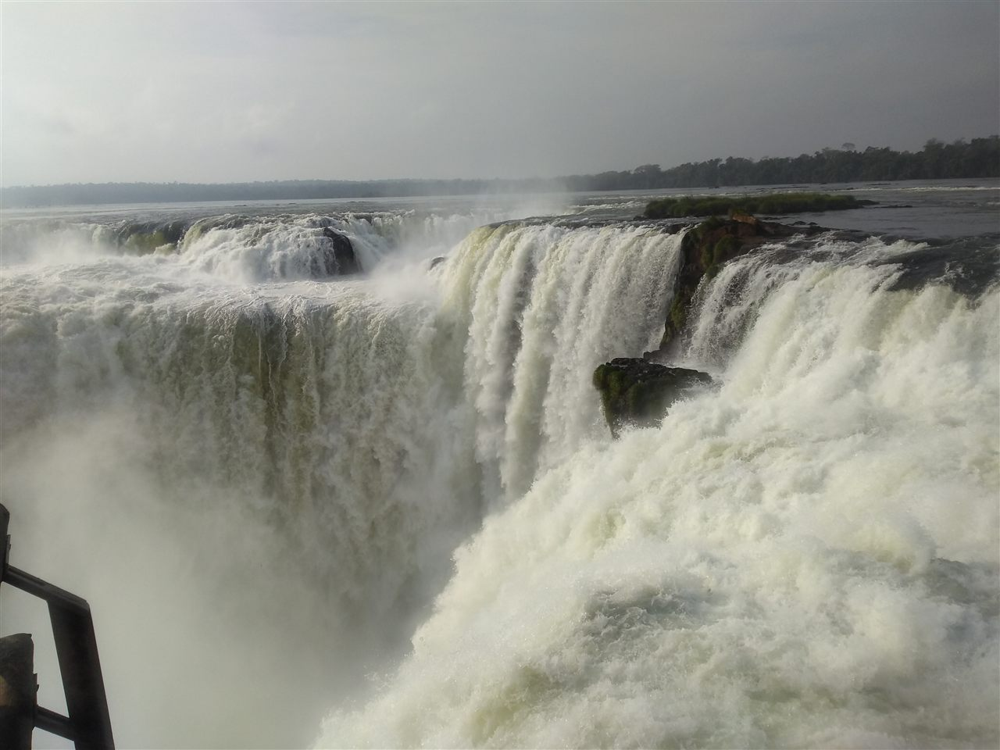 |
||||
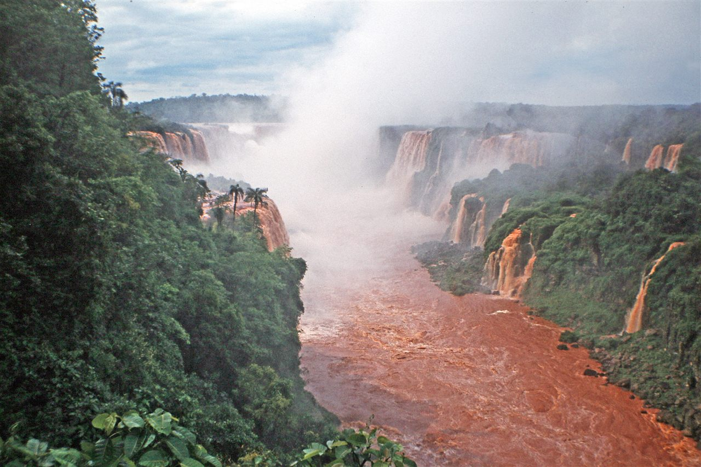 |
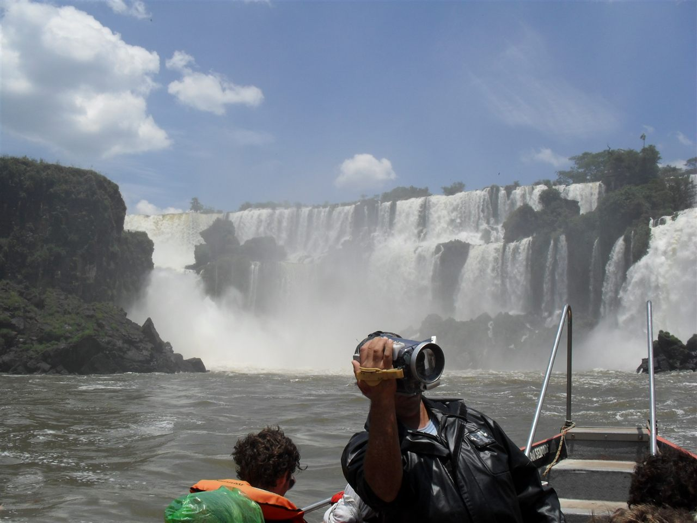 |
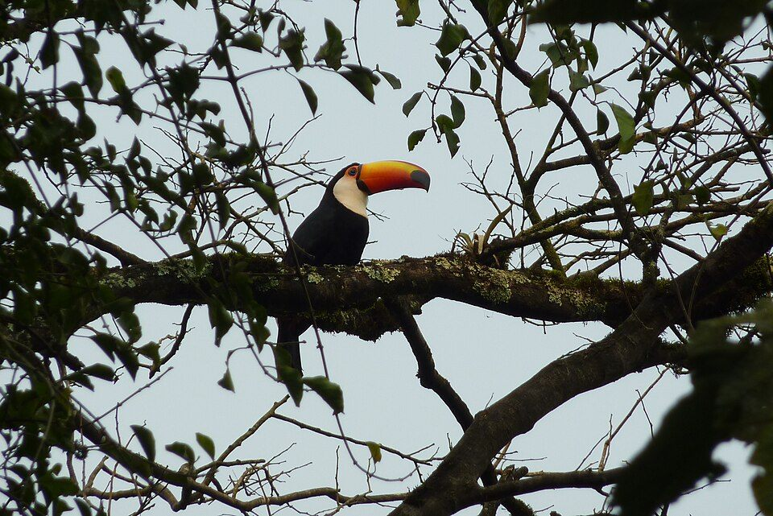 |
|||
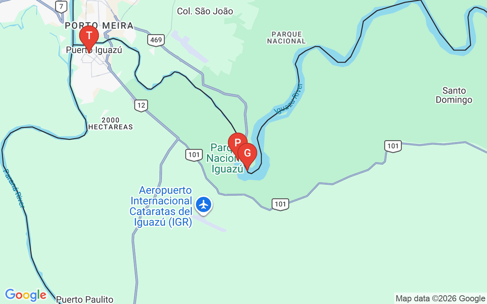
View on Google Maps ↗Day 3 · Friday, Dec 11 — Bonus Buenos Aires Morning + Evening Flight to Iguazú
⚠️ Flight change: The booked flight is Flybondi FO5102, EZE → IGR, 18:05–19:55 (evening, from Ezeiza — confirmed on the e-ticket in docs/, not the old early-morning flight). This frees up the whole day in Buenos Aires but means falls sightseeing now begins Dec 12.
- Morning / afternoon: Bonus free time in Buenos Aires. Options: a guided Teatro Colón tour, revisit San Telmo or Palermo, a long café lunch, or simply rest. Check out and store bags at the hotel.
- Afternoon: Head to Ezeiza (EZE) — allow ~45–60 min from Palermo/Recoleta plus check-in buffer, so leave by ~15:00–15:30.
- Evening: Flight EZE → IGR (18:05–19:55). Transfer to your hotel in Puerto Iguazú town (~8 km from the park). Late dinner — try surubí (river fish).
| Stay | Hotel in Puerto Iguazú town |
| Note | Ezeiza (EZE) is well outside the city — pre-book a remise or use Uber/Cabify and leave earlier than you would for Aeroparque |
Day 4 · Saturday, Dec 12 — Iguazú Falls (Now Your Only Full Falls Day)
⚠️ Only one full falls day now: Because the Dec 11 flight arrives in the evening, Dec 12 is your single full day at the falls (tomorrow's connecting flight into Ushuaia departs Ezeiza at 16:25, so the IGR → EZE leg leaves Puerto Iguazú in the early-to-mid afternoon). Prioritise the Argentine side — the main event.
- Full day: Parque Nacional Iguazú (Argentine side):
- Upper Circuit (Circuito Superior) — walkway above the falls
- Lower Circuit (Circuito Inferior) — get close to the base
- Garganta del Diablo (Devil's Throat) — the centrepiece: a 150m-wide horseshoe cataract. Stand at the railing as millions of litres pour past you. Unforgettable.
- Optional: ecological train through the jungle between circuits; Macuco Boat Safari — a speedboat ride to the base of the falls (you WILL be completely drenched).
- Evening: Return to Puerto Iguazú. Dinner and relax.
Brazilian side squeezed out: The old plan used Dec 11 for the Argentine side and Dec 12 for the Brazilian side. The evening inbound flight removed that second day. To get the Brazilian panoramic view back you'd need an earlier Dec 11 flight or a later Dec 13 departure (the confirmed 16:25 Ezeiza connection leaves no room for a Brazil border crossing on Dec 13). Otherwise, accept the Argentine side as the highlight — it's the bigger, more immersive park.
| Stay | Hotel in Puerto Iguazú |
| Note | Rain poncho / change of clothes essential — the Devil's Throat will soak you |
🐧 Ushuaia
Dec 13–16 · 4 nights
The southernmost city in the world — "Fin del Mundo" (End of the World). Gateway to Antarctica.
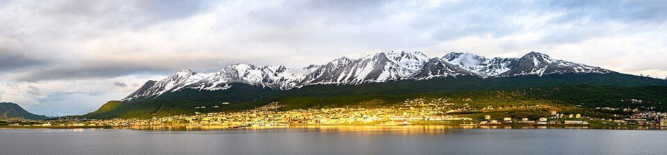 |
|
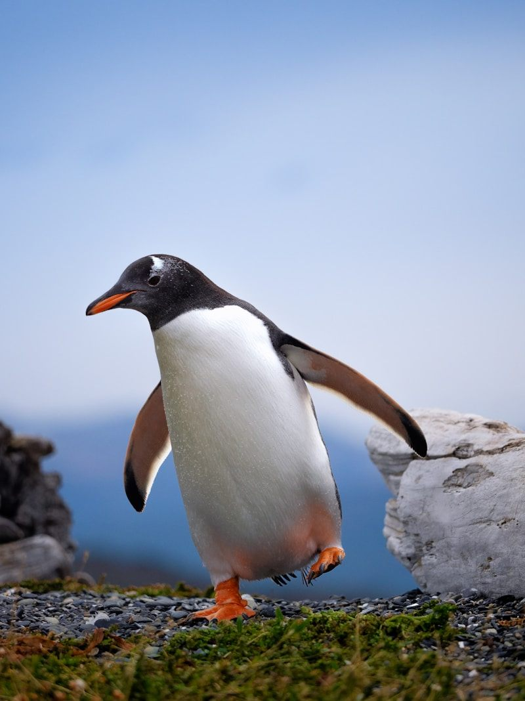 |
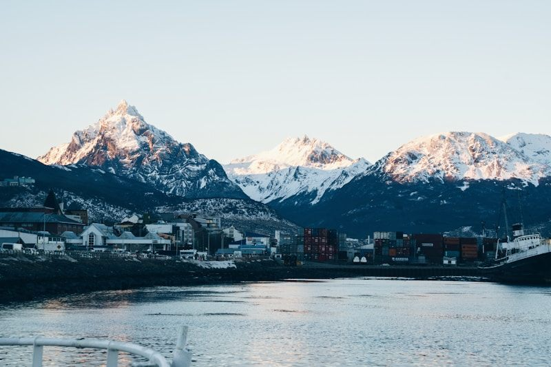 |
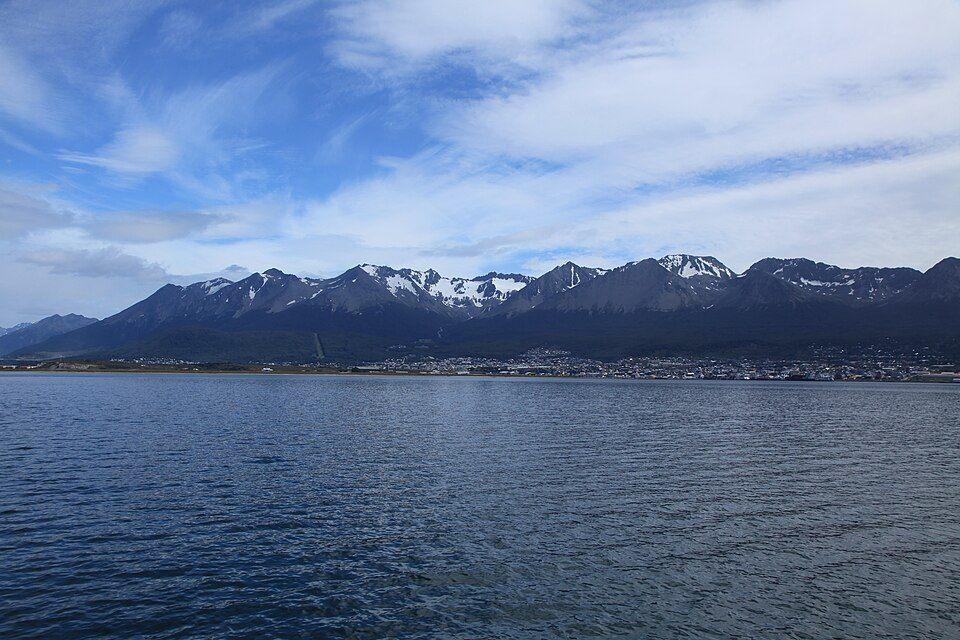 |
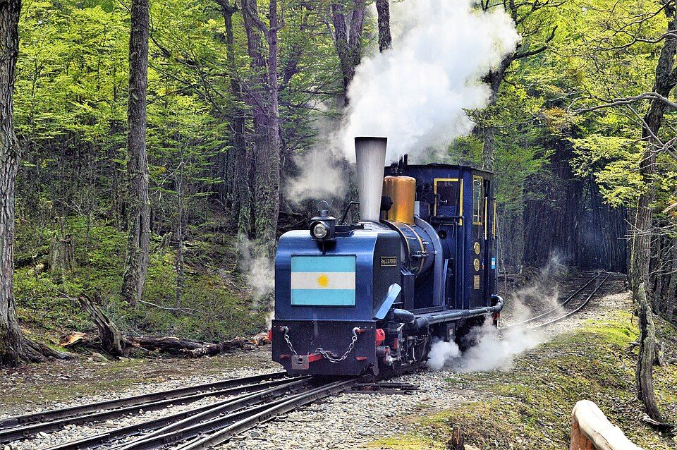 |
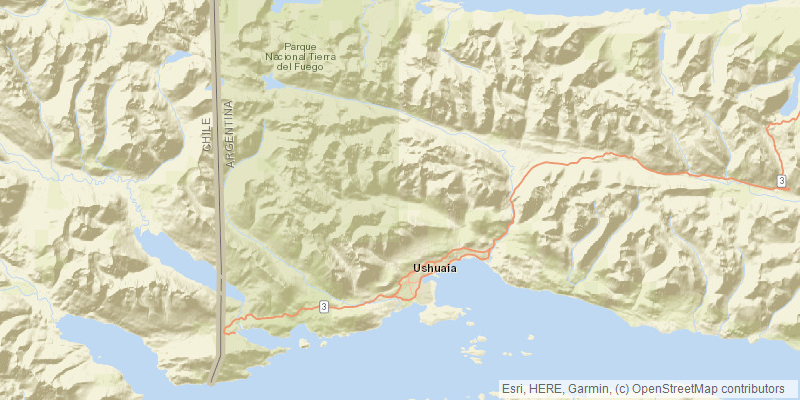
View on Google Maps ↗Day 5 · Sunday, Dec 13 — Travel to Ushuaia
⚠️ Flight note (updated): No direct IGR → USH service exists. The confirmed connection runs through Ezeiza (EZE), not AEP: Flybondi FO5101 (IGR → EZE), then Aerolíneas AR1880 (EZE → USH, 16:25–20:05). The IGR → EZE departure/arrival times aren't shown on the receipt — verify against the e-ticket, but it must land at EZE with enough buffer before 16:25. Treat this as a travel day, not a sightseeing day.
- Morning: Slow final morning in Puerto Iguazú; check out and have lunch before heading to the airport.
- Afternoon: Fly IGR → EZE (Flybondi FO5101, times TBC). Connect at Ezeiza.
- Evening: Fly EZE → USH (Aerolíneas AR1880, 16:25–20:05). Transfer to the hotel after landing — a normal dinner hour, not as late as previously planned.
- Dinner: Order centolla (king crab) close to the hotel.
| Stay | Hotel in Ushuaia |
| Note | Confirm Martillo excursion transport first: pick up the rental car on Dec 14 only if practical around the tour; otherwise begin the rental on Dec 15 |
Day 6 · Monday, Dec 14 — Martillo Island Penguins + Beagle Channel
- Morning: Book the controlled Isla Martillo (Martillo Island) land-walk excursion if you want to go ashore among penguins. Expect Magellanic and Gentoo penguins; king penguins are occasional visitors, not guaranteed. Other boat navigations may view the colony without a landing. Book well in advance — capacity is limited.
- Afternoon: Drive the scenic route along the Beagle Channel back towards town. Stop at panoramic lookouts. Optional: visit the Presidio (old prison/museum) or Museo del Fin del Mundo.
- Evening: Dinner in Ushuaia — try local lamb (cordero patagónico) or king crab again.
| Stay | Hotel in Ushuaia |
| Note | Martillo Island: confirm both the controlled land-walk and whether transport is provided before fixing the rental pickup date |
Day 7 · Tuesday, Dec 15 — Free Day / Adventure Activities
- Morning: Choose your adventure:
- Hike up Cerro Martial for panoramic views over Ushuaia and the Beagle Channel (~3 hrs round-trip, moderate — the most demanding option)
- Kayaking in the Beagle Channel (easy, guided tours available)
- Lago Escondido / Lago Fagnano scenic drive east (~150 km round-trip — big lakes straddling the Chile border; zero hiking, pure scenery from the car)
Prefer easy? The Lago Escondido / Lago Fagnano drive is the relaxed choice — beautiful lakes and Patagonian mountain scenery with no exertion required. Save your legs for El Chaltén.
- Afternoon: Explore Ushuaia's artisan market and shops — pick up Tierra del Fuego crafts, local chocolates, and the famous "End of the World" stamps for your passport.
- Evening: Dinner in Ushuaia. Keep the following day for Tierra del Fuego National Park.
| Stay | Hotel in Ushuaia |
| Note | Tomorrow is the national park day moved from the late-arrival flight day |
Day 8 · Wednesday, Dec 16 — Tierra del Fuego National Park
- Morning / afternoon: Drive west to Parque Nacional Tierra del Fuego (~12 km):
- Walk a suitable stretch of the Senda Costera for Beagle Channel views.
- Visit Lapataia Bay, the end of Ruta Nacional 3.
- Stop by the End of the World Train station if of interest.
- Late afternoon: Return the rental car and pack for tomorrow's flight.
- Evening: Last dinner in Ushuaia. Early night.
| Stay | Hotel in Ushuaia |
| Note | Flight to El Calafate tomorrow afternoon; if renting there, arrange airport pickup after the 16:40 arrival |
🧊 El Calafate
Dec 17–19 · 3 nights + Dec 22 · 1 night (return)
Gateway to Los Glaciares National Park — home of the world's most accessible and spectacular glacier
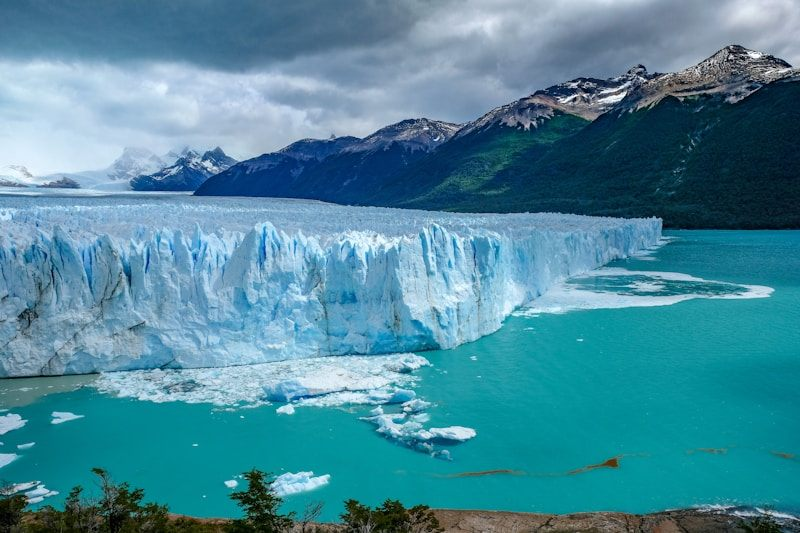 |
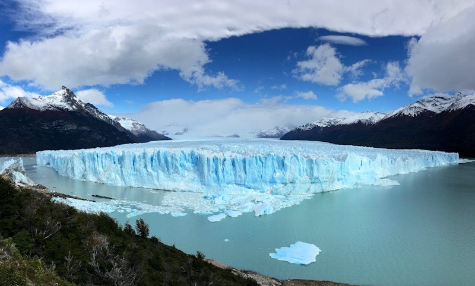 |
||||
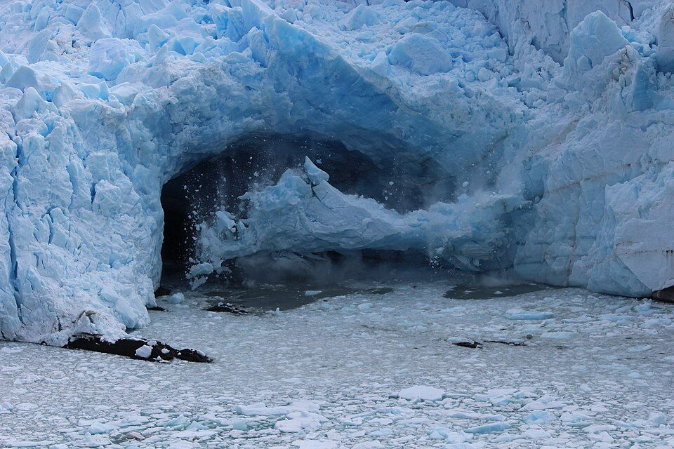 |
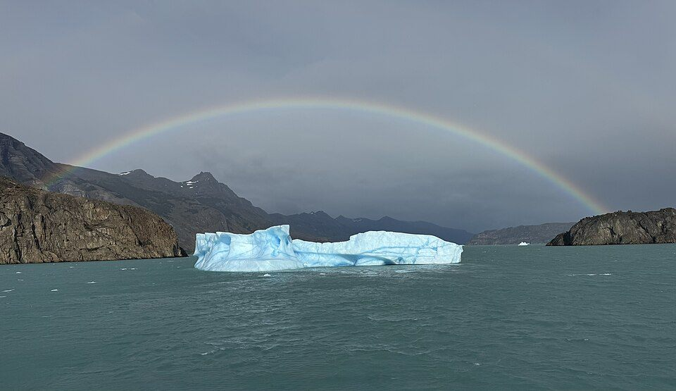 |
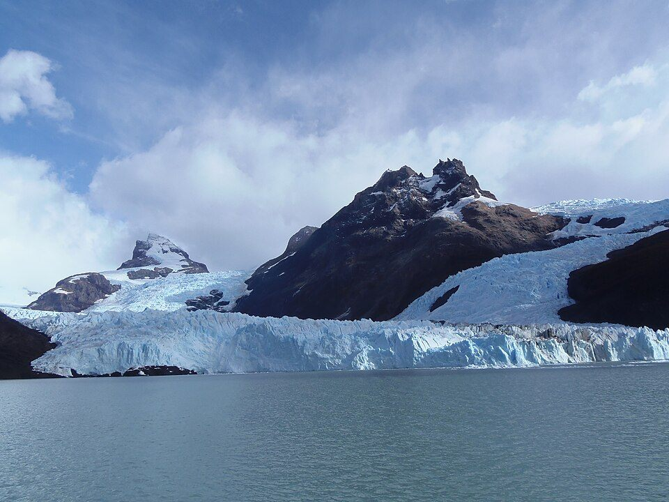 |
|||
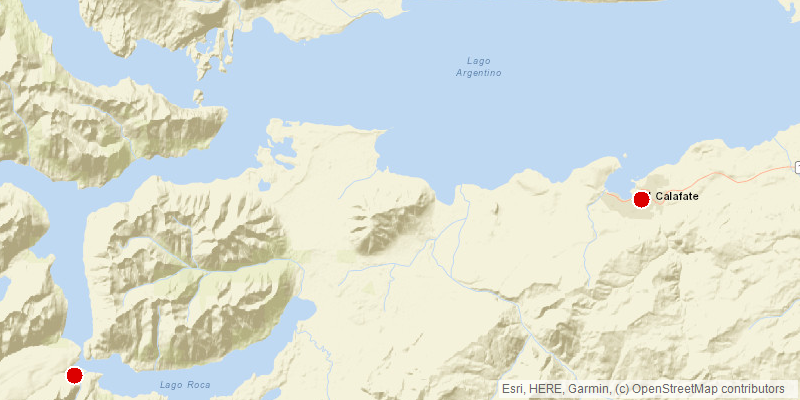
View on Google Maps ↗Day 9 · Thursday, Dec 17 — Travel to El Calafate
- Morning / early afternoon: Have a relaxed final Ushuaia morning, check out, and head to the airport.
- Afternoon: Flight USH → FTE (Flybondi FO5540; ~15:20–16:40, confirm exact times on the e-ticket — the receipt in docs/ confirms the operator/flight number but not times). Pick up the optional rental car at the airport or transfer to your hotel in El Calafate.
- Evening: If daylight and energy allow, take a short walk along Lago Argentino, then have dinner in El Calafate and try Patagonian lamb. Save the Glaciarium museum for the return afternoon on Dec 22 if desired.
💵 CASH WARNING: Withdraw a generous amount of Argentine pesos at an El Calafate ATM before heading to El Chaltén. El Chaltén has limited ATM service (Banco Santa Cruz / Red Link), but a single local ATM can run short of cash or be unavailable. Budget for 2 nights of meals, drinks, and incidentals.
| Stay | Hotel in El Calafate |
Day 10 · Friday, Dec 18 — Perito Moreno Glacier
This is one of the top natural spectacles on Earth. Give it a full day.
- Full Day: Glaciar Perito Moreno — 78 km west of El Calafate (drive yourself if you have a rental car, or take a guided tour or hire a remise):
- The pasarelas (walkways) along the southern and eastern flanks give you close-up views of the 5-km-wide, 74-m-tall ice wall — for FREE after park entry.
- Watch and listen for calving — cathedral-sized chunks of ice exploding into the lake with a deafening crack. Happens constantly.
- Book a guided ice trek: Mini-Trekking (~1.5 hrs on the glacier with crampons) is the popular option. Big Ice (~5 hrs) is for the more adventurous. Both require advance booking months ahead.
- Boat tour option: Some operators offer a zodiac tour that approaches the glacier wall from the water.
- Evening: Return to El Calafate. Celebratory dinner.
| Stay | Hotel in El Calafate |
| Book ahead | Ice trek tours (Mini-Trekking or Big Ice) — 2–3 months ahead at minimum |
Day 11 · Saturday, Dec 19 — Lago Argentino Boat Tour + Rest
- Morning: Lago Argentino boat excursion — sail past the vast Upsala Glacier (one of South America's largest, though retreating) and Spegazzini Glacier (with ice walls rising 135 m above water — the tallest accessible glacier face in the world). Full-day tours available.
- Afternoon: Rest and prepare for El Chaltén tomorrow. Buy food/snacks for the road, and withdraw your cash now.
- Evening: Dinner and early night — it's an early start to El Chaltén tomorrow.
| Stay | Hotel in El Calafate |
⛰️ El Chaltén
Dec 20–21 · 2 nights
Argentina's trekking capital, population ~1,500 — home to Fitz Roy and Cerro Torre
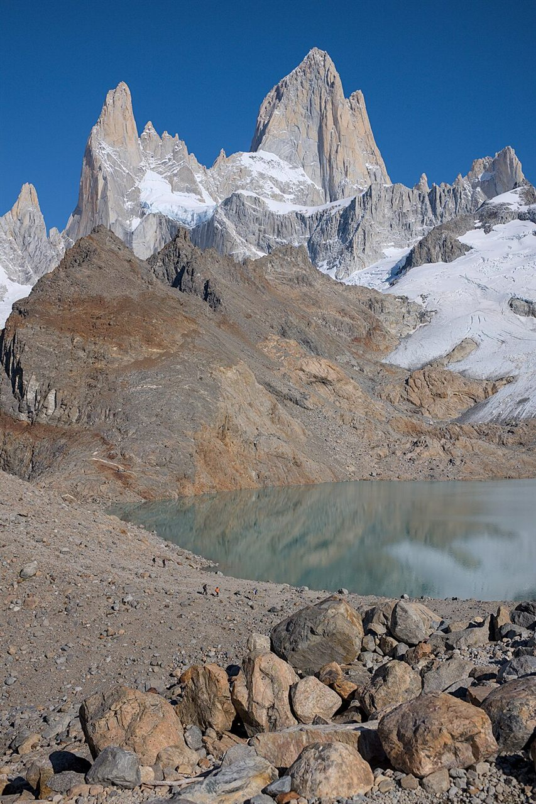 |
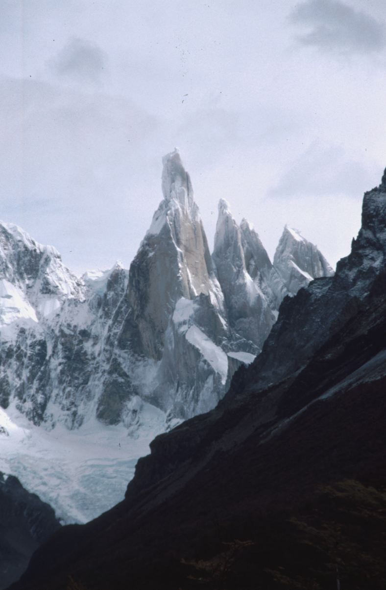 |
||||
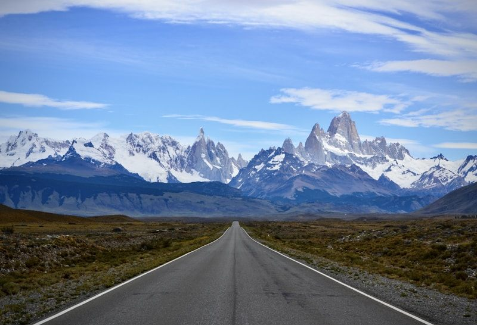 |
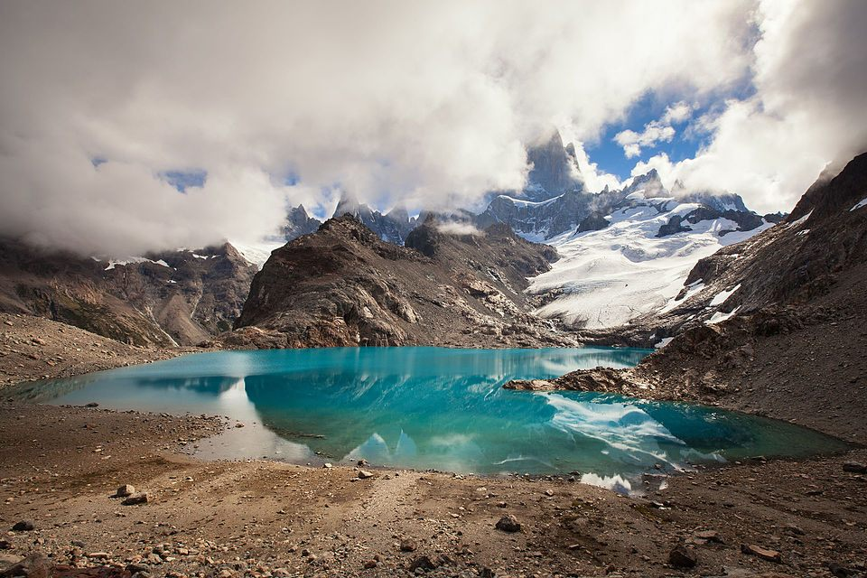 |
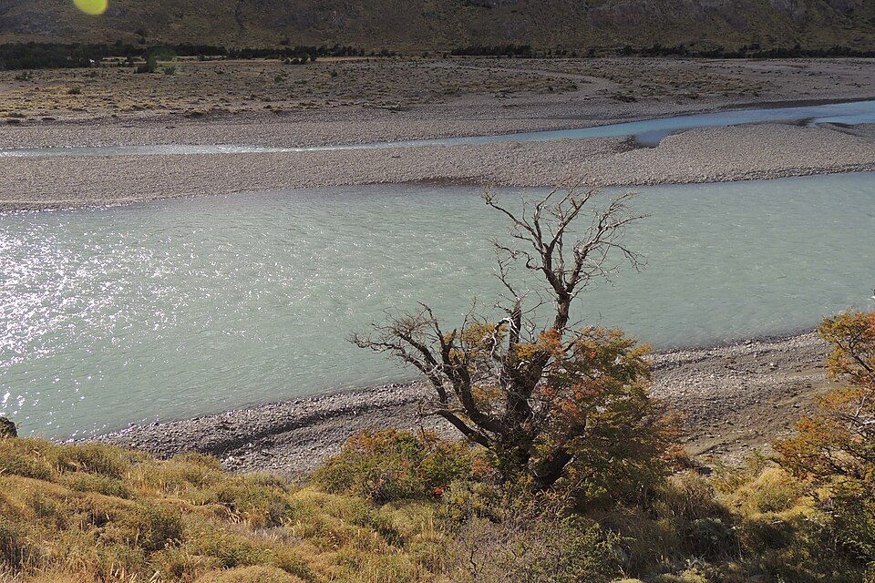 |
|||
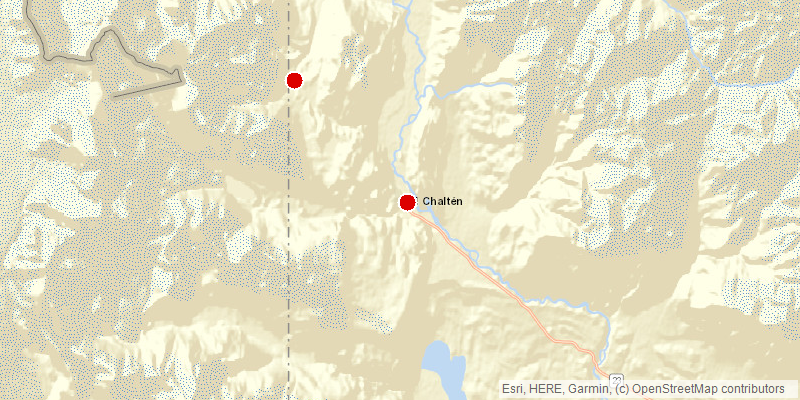
View on Google Maps ↗Day 12 · Sunday, Dec 20 — El Calafate → El Chaltén + Laguna de los Tres
- Morning: Travel to El Chaltén (~3 hrs, ~220 km via RN40/RN23):
- By bus: Departs 7–8 am from El Calafate bus terminal. Reliable, cheap (~$15–20 USD), the standard tourist option. Book in advance.
- By rental car: Full schedule flexibility — stop wherever you like along the empty Patagonian steppe. AWD recommended.
- Late morning: Arrive El Chaltén. Drop bags at hotel. Trails start right at the edge of the village; Los Glaciares National Park charges access at Portada El Chaltén, so check the current tariff and purchase requirements before hiking.
- Afternoon: Start the Laguna de los Tres trail — the iconic Fitz Roy hike:
- 20 km round-trip, ~1,200 m elevation gain
- 6–8 hours total
- The payoff at the top: Fitz Roy (3,405 m) reflected in the turquoise glacial lagoon. One of the great views in all of South America.
Can't do 6–8 hours? Two shorter alternatives still deliver Fitz Roy: - Mirador Fitz Roy — branch off the main trail after ~1 hr; ~2–3 hrs round-trip total, minimal elevation gain, excellent views of the massif from below. Genuinely worth it on its own. - Poincenot campsite — continue past the Mirador to the camp directly beneath the towers; ~3–4 hrs round-trip, moderate. Gets you right under Fitz Roy without the brutal 400 m final climb to the laguna. Horse-trekking operators in El Chaltén can also take you to this point on horseback — the final rocky section to the laguna itself is foot-only regardless.
- Evening: Return to town. Dinner — El Chaltén has surprisingly excellent restaurants for such a tiny place. Toast to the hike.
| Stay | Hotel or cabin in El Chaltén |
| Weather | Patagonian weather is notoriously changeable. Check the morning forecast — reschedule hikes if winds are severe |
Day 13 · Monday, Dec 21 — Laguna Torre
- Morning/Afternoon: Hike to Laguna Torre for views of the needle-like Cerro Torre (one of the world's most technically demanding climbs):
- 18 km round-trip, moderate difficulty
- 5–6 hours total
- On clear days, views of the floating hanging glaciers on Cerro Torre's peak are extraordinary.
Shorter alternatives for Laguna Torre: - Chorrillo del Salto waterfall — 4 km round-trip, ~1.5 hrs, essentially flat. A beautiful cascade just outside the village. Very easy and genuinely lovely. - Walk the first section of the trail — the Laguna Torre path is much flatter than Laguna de los Tres (only ~200 m elevation gain total). The first ~4–5 km follow a wide, gentle valley with growing views of the Torre massif. Turn back at Bridwell Camp for a ~2–2.5 hr round-trip with no real climbing. - Horse trekking — operators in El Chaltén offer guided horse rides on this trail that can take you further along the valley than you'd comfortably walk.
- Evening: Dinner in El Chaltén. Toast with local craft beer (El Chaltén has a microbrewery). Celebrate one of the most spectacular 48 hours of the trip.
| Stay | Hotel or cabin in El Chaltén |
🧊 El Calafate (Return)
Dec 22 · 1 night
Day 14 · Tuesday, Dec 22 — El Chaltén → El Calafate (Return)
- Morning: Return to El Calafate (~3 hrs) by bus or rental car. Arrive around midday.
- Afternoon: Rest at the hotel. Optional visit to the Glaciarium museum if not already visited. Explore El Calafate's shops.
- Evening: Dinner in El Calafate.
| Stay | Hotel in El Calafate |
| Note | Flight to Bariloche tomorrow morning |
🍫 Bariloche
Dec 23–Jan 1 · 10 nights · NEW YEAR'S EVE!
"The Queen of Patagonia" — alpine lakes, Andean scenery, Swiss-style architecture, world-class chocolate, and one of Argentina's biggest NYE celebrations
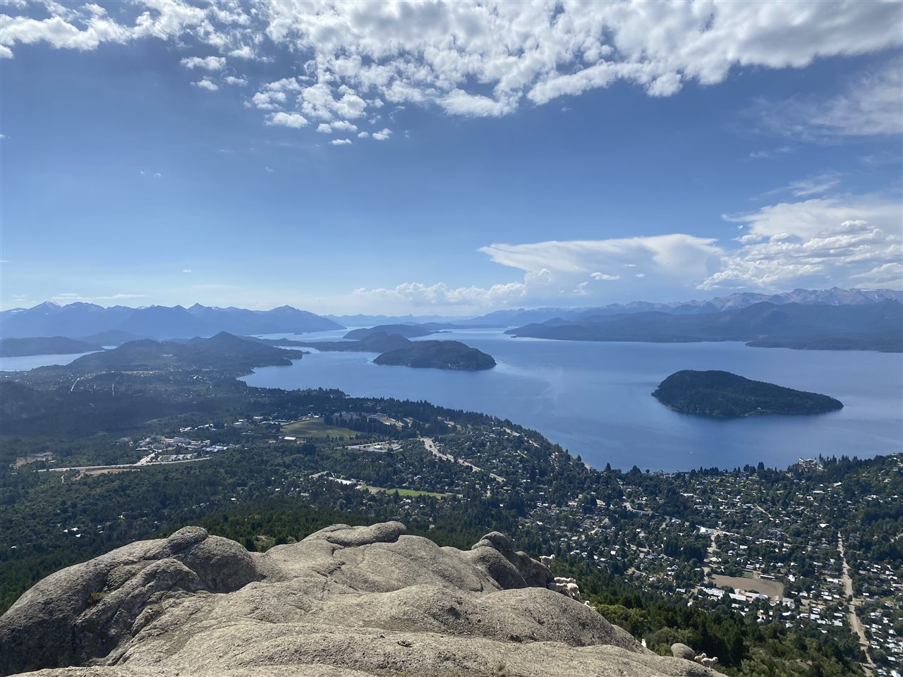 |
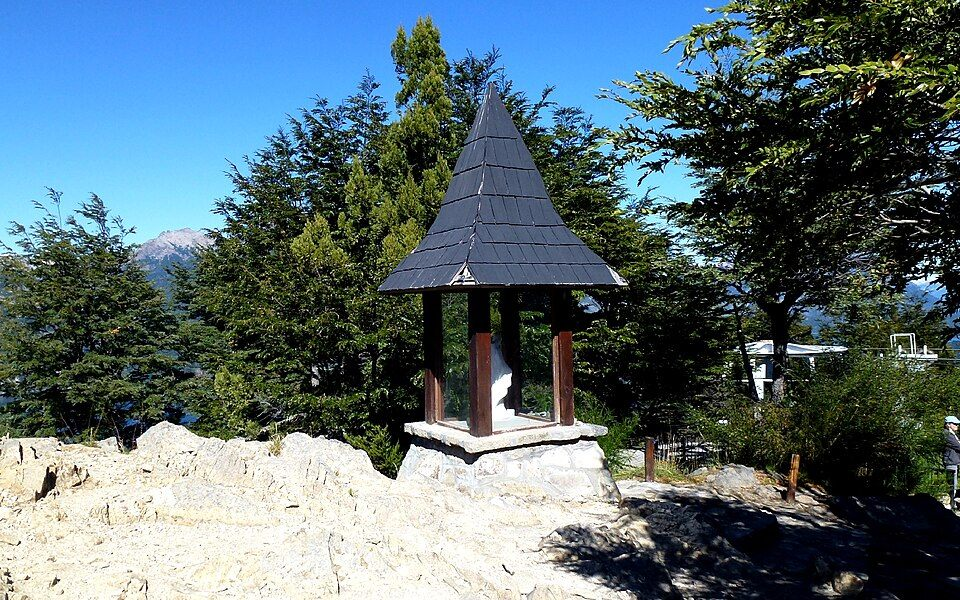 |
||||
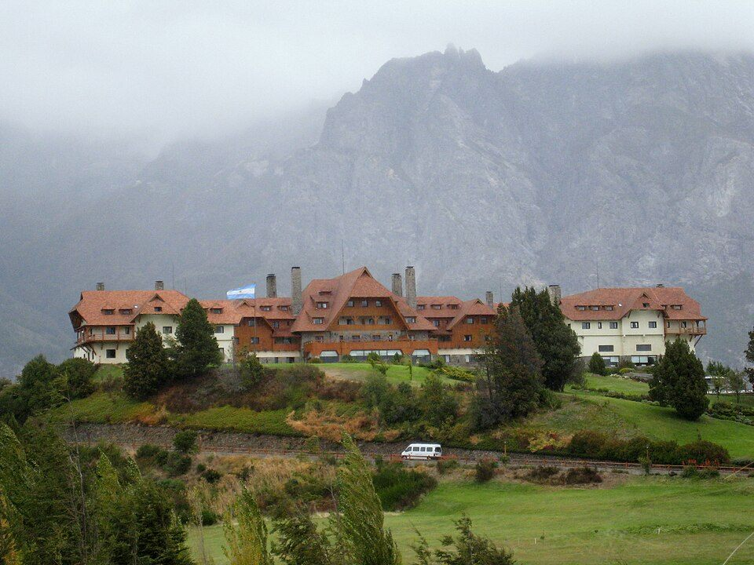 |
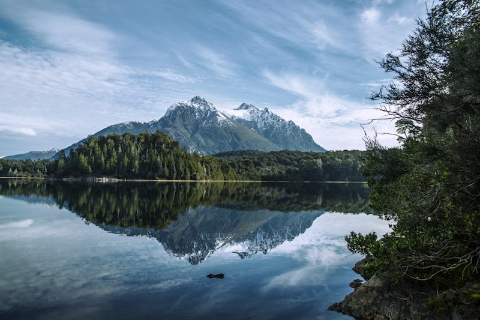 |
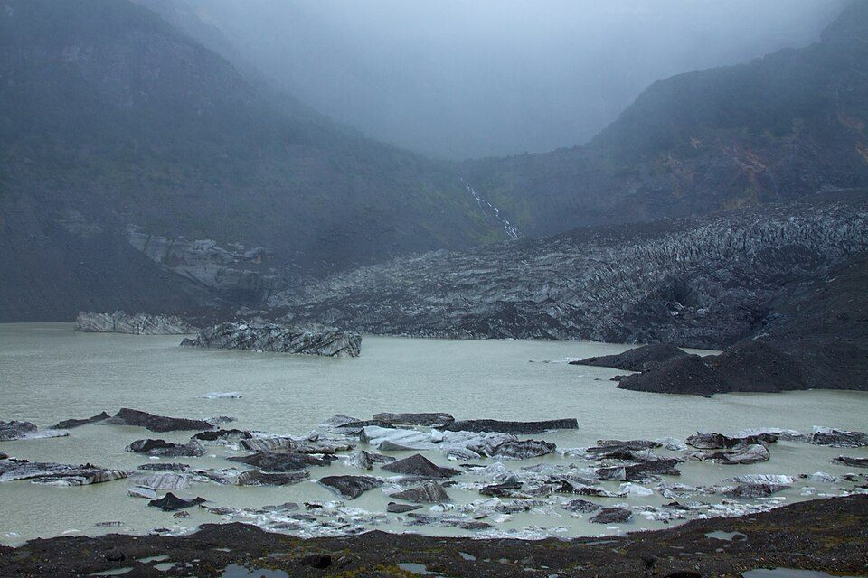 |
|||
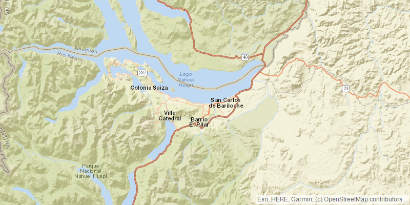
View on Google Maps ↗Day 15 · Wednesday, Dec 23 — Flight to Bariloche + Arrival
- Morning: Nonstop flight FTE → BRC (09:25–11:10). Pick up rental car at BRC airport, ~11:30 after baggage claim.
- Afternoon: Check in to hotel (booked months ago!). Drive to the iconic Civic Centre (tuff-stone alpine architecture declared a national monument). Walk the Nahuel Huapi Lake waterfront and browse the famous chocolate shops — Bariloche is Argentina's chocolate capital.
- Evening: Dinner by the lake. Welcome to the Lakes District.
| Stay | Hotel in Bariloche (pre-booked well in advance!) |
Day 16 · Thursday, Dec 24 — Circuito Chico + Christmas Eve
- Must-do: Drive the Circuito Chico (~60 km loop west of Bariloche) and go up Cerro Campanario — 35-min hike (or chairlift) to Argentina's most-photographed panoramic viewpoint: Nahuel Huapi Lake, islands and Andes in all directions.
- Strong additions:
- Llao Llao Hotel — the legendary 1938 alpine hotel. Walk the beautiful grounds; have a coffee if budget allows.
- Puerto Pañuelo — beautiful dock with views back to the hotel and across the lake.
- Lago Moreno viewpoints.
- Nice if energy allows: Leave extra time for a lakeside stop or short walk rather than rushing the loop.
- Evening: Return to Bariloche. Christmas Eve (Nochebuena) dinner — many restaurants serve special menus. Celebrate in the Alps of Patagonia.
| Stay | Hotel in Bariloche |
Day 17 · Friday, Dec 25 — Cerro Tronador (Christmas Day, Subject to Access Confirmation)
- Conditional full-day plan: Give Cerro Tronador the day it deserves only after confirming that the access road and visitor areas are operating on Christmas Day. Drive south through native Valdivian forest, visit the Ventisquero Negro (the "black glacier" — a dramatic dark-streaked hanging glacier), and take in the gorge of the Manso River.
- Controlled-road timing: The official National Parks guidance states that the approximately 50 km gravel section from Los Rápidos to Pampa Linda operates with timed traffic: entry only 10:30–14:00, exit only 16:00–18:00, and two-way traffic 19:30–09:00. Leave Bariloche early enough to enter in the outbound window and plan the return around the exit window. Official access hours ↗
- Holiday check / fallback: Shortly before Dec 25, 2026, confirm Christmas-Day access and any service restrictions with Parque Nacional Nahuel Huapi. If it is closed or unsuitable, swap Tronador with one of the later flexible Bariloche days rather than driving out speculatively.
- Nice if energy allows: Add only a short extra stop on the return. Do not count on fitting Cerro Catedral into the same day unless you start very early and are happy with an unusually long outing.
- Evening: Return to Bariloche. This is one of the biggest road days of the trip.
| Stay | Hotel in Bariloche |
| Note | AWD recommended; confirm Christmas-Day access and obey the controlled entry/exit windows before setting out |
Day 18 · Saturday, Dec 26 — Circuito Grande
- Full Day: Drive the Circuito Grande (~250 km loop north of Bariloche) — a superb lakes district road trip with mountain and lake views all day:
- Lago Nahuel Huapi northern shore panoramas
- Confluencia — viewpoint where the Limay River begins its journey east
- Villa La Angostura (~80 km from Bariloche) — charming lakeside village on a peninsula in the lake. Excellent lunch stop.
- Bosque de Arrayanes — unique forest of cinnamon-barked arrayán trees; optional short boat tour from Villa La Angostura.
- Return via Paso Córdoba with Patagonian steppe views.
- Evening: Return to Bariloche.
| Stay | Hotel in Bariloche |
Day 19 · Sunday, Dec 27 — Cerro Catedral + Adventure Activities
- Must-do: Cerro Catedral (~20 km south) — take the summer lifts to the ridge for 360° Andean views. The lifts handle all the elevation gain; a short stroll from the upper station to the nearest viewpoint is enough for a spectacular experience. Walking further along the ridgeline is entirely optional — do as little or as much as you like once you're up.
- Strong options:
- Kayaking on Nahuel Huapi (guided or rental) — gentle and scenic
- White-water rafting on the Río Manso — class III–IV, exhilarating but physically demanding and very wet. Only if the whole group is keen.
- Nice if energy allows:
- Cerro Otto — the teleférico (cable car) takes you to the summit panorama in ~20 min with no hiking required. The 4 hr foot trail is there for the most energetic, but the cable car gives the same views.
- Fly-fishing on one of the region's famous rivers
- Evening: Dinner in Bariloche.
| Stay | Hotel in Bariloche |
Day 20 · Monday, Dec 28 — Free Day / Relax
- Day: Use this bonus day however you like — re-do a favourite spot, sleep in, take a gentle lakeside walk, or just recharge after the intense Patagonian hiking of the past week.
- Strong options:
- Return to Cerro Campanario for sunrise or sunset
- Short hike in Parque Municipal Llao Llao
- Visit the Museo de la Patagonia in the Civic Centre
- Afternoon: Buy chocolates for gifts at home (Abuela Goye, Mamuschka, and Del Turista are the most famous brands).
- Evening: Dinner out — try a fondue (a Bariloche speciality).
| Stay | Hotel in Bariloche |
Day 21 · Tuesday, Dec 29 — Seven Lakes Drive (Full Day)
- Full Day: Drive the Route of the Seven Lakes toward San Martín de los Andes — a legendary Lakes District road trip linking lakes Correntoso, Espejo, Escondido, Villarino, Falkner, Machónico, and Lácar with mountain scenery all day.
- Stop for lunch in San Martín de los Andes — a beautiful alpine town on Lago Lácar.
- Return via the same route or loop back through Villa La Angostura and the Bosque de Arrayanes.
- Evening: Return to Bariloche. Rest up.
| Stay | Hotel in Bariloche |
Day 22 · Wednesday, Dec 30 — Relaxed Day + Pre-NYE
- Day: A lighter day before the big night — sleep in, wander, recharge.
- Options:
- Bosque de Arrayanes by boat from Villa La Angostura — if you skipped it on the Circuito Grande day
- Return to Cerro Campanario for a sunset view
- Short walk in Parque Municipal Llao Llao
- Additional activity candidates:
| Activity | Description and source | Time / fit for this day | Approx. travel distance from central Bariloche |
|---|---|---|---|
| Cerro Otto teleferico + revolving cafe | Ride the cable car to summit views over the city and Nahuel Huapi, with time at the revolving cafe. Official tourism | About 3-4 hours; the easiest add-on for a relaxed pre-NYE day. | About 5 km each way to the cable-car base (~10 km round trip), plus the cable-car ascent. |
| Puerto Blest + Cascada de los Cantaros | Lake navigation from Puerto Pañuelo toward Puerto Blest, paired with forest and waterfall scenery. Official tourism | Half or full day; scenic, but a bigger commitment before NYE than a city-adjacent outing. | Puerto Pañuelo is 25.5 km each way by road (~51 km round trip), followed by the boat excursion. |
| Isla Victoria + Bosque de Arrayanes | Boat excursion combining Isla Victoria with the distinctive arrayan forest. Official tourism | Half or full day; best if a lake excursion is preferred over a genuinely restful day. | Puerto Pañuelo is 25.5 km each way by road (~51 km round trip), followed by the boat excursion. |
- Afternoon: Back in Bariloche. Last chocolate shopping — stock up on gifts (Abuela Goye, Mamuschka, Del Turista).
- Evening: Pre-NYE dinner. Make a reservation somewhere special. The city fills up on Dec 31.
| Stay | Hotel in Bariloche |
Day 23 · Thursday, Dec 31 — New Year's Eve 🎉
- Day: Relaxed morning. Final walk or hike. Rest up for a big night.
- Afternoon: Explore Bariloche's historic centre; have a leisurely lunch.
- Evening: NYE on the Bariloche waterfront — one of Argentina's biggest New Year's celebrations:
- The lakefront Centro Cívico and adjacent plaza fill with tens of thousands of revellers.
- Midnight celebration by Nahuel Huapi Lake — Bariloche has a zero-pyrotechnics ordinance, so plan on the waterfront atmosphere rather than an official fireworks display.
- Massive street party continues until dawn.
- Many restaurants and hotels host special NYE dinners (book in advance!).
| Stay | Hotel in Bariloche |
| Note | This is why you booked the hotel a year early. Enjoy every moment. |
Day 24 · Friday, Jan 1 — New Year's Day
- Morning: Slow start — recover from NYE celebrations. Breakfast at the hotel or a café in the Centro Cívico.
- Afternoon: Choose a gentle activity:
- Lakeside stroll along the Nahuel Huapi waterfront
- Visit the Museo de la Patagonia in the Civic Centre
- Last browse of the chocolate shops — stock up on gifts (Abuela Goye, Mamuschka, Del Turista)
- Cerro Otto teleférico for an easy summit view if energy allows
- Evening: Final dinner in Bariloche. Return the rental car at BRC airport tonight or early tomorrow before the flight.
| Stay | Hotel in Bariloche |
| Note | Flight to Buenos Aires tomorrow — return rental car at BRC airport before check-in |
�️ Buenos Aires (Departure)
Jan 2–3 · 2 nights
Day 25 · Saturday, Jan 2 — Full Bariloche Day + Late Flight to Buenos Aires
⚠️ Flight change: The booked flight is Flybondi FO5245, BRC → EZE, 21:50–23:55 (late night, into Ezeiza — not the old midday flight). This gives you a full final day in Bariloche but a near-midnight arrival in Buenos Aires with a long transfer into the city. Note: this flight was renumbered from FO5249 to FO5245 by the airline after booking — double-check your boarding pass.
- Day: One more full day in Bariloche — a favourite viewpoint, a lakeside walk, last chocolate shopping, or a relaxed lunch. Keep the rental car.
- Evening: Return the rental car at BRC airport by ~20:00 — allow ~1h45 before the 21:50 departure to cover return inspection, refuelling, and check-in (which typically closes ~40 min before departure). Fly BRC → EZE (21:50–23:55).
- Near midnight: Land at Ezeiza (EZE) — well outside the city, ~45–60 min to Palermo/Recoleta. Pre-book a remise or use Uber/Cabify to the hotel; this is a longer, pricier transfer than a downtown airport would give. No dinner plan tonight; grab a late bite if hungry.
| Stay | Hotel in Palermo or Recoleta |
| Note | Return rental car at BRC by ~20:00; confirm the rental desk's evening staffed hours and refuel before returning; pre-arrange the late-night EZE → hotel transfer (~45–60 min, budget accordingly) |
Day 26 · Sunday, Jan 3 — Final Day in Buenos Aires
- Morning: Slow breakfast. Explore or revisit any neighbourhood.
- Strong option: San Telmo Sunday market (Feria de San Pedro Telmo) — runs all day along Defensa street; antiques, street food, tango performers.
- Afternoon: Palermo Soho shopping, last alfajores and dulce de leche to bring home, or a return visit to any favourite from Day 2.
- Evening: Early night. International departure early tomorrow.
| Stay | Hotel in Palermo or Recoleta |
| Note | International departure tomorrow from EZE — arrive 3 hours early (budget ~1h 30min transfer across the city) |
Day 27 · Monday, Jan 4 — Departure ✈️
- Transfer to EZE with plenty of time. International departures: arrive 3 hours early.
- Departure: January 4, 2027.
🗺️ Practical Tips
Money
- Bring USD cash in good condition (no tears, pen marks, or heavy creases — Argentine banks will reject them). $100 notes preferred.
- Use an official casa de cambio or your hotel for exchange. Avoid unofficial street changers.
- ATMs have daily withdrawal limits; extract cash in stages.
- El Chaltén has limited ATM service. Withdraw before leaving El Calafate rather than relying on the single local ATM being stocked and working.
Weather & Clothing
| Region | December–January Conditions | Essentials |
|---|---|---|
| Buenos Aires | Hot, humid (28–35°C) | Light clothes, comfortable walking shoes |
| Iguazú | Very hot and humid (30–38°C) | Light clothes, rain poncho/waterproof |
| Patagonia (Ushuaia, Calafate, Chaltén, Bariloche) | Cool–cold, very windy (5–20°C) | Windproof/waterproof jacket (essential!), layers, warm hat, gloves |
In Patagonia, weather can change from sunshine to rain to wind in 20 minutes. Always carry layers.
Safety
- Buenos Aires: Use Uber, Cabify, or InDriver rather than street taxis. Avoid walking in La Boca after dark. Be alert in crowded areas.
- Patagonian trails: Stay on marked paths. Tell someone your route. Carry water and snacks.
- Sun protection: The UV index in Patagonia is surprisingly high. Use SPF 50+.
Language
- Basic Spanish is very helpful outside Buenos Aires. Argentines speak a distinctive dialect with vos instead of tú.
- Key phrases: ¿Cuánto cuesta? (How much?), Una mesa para cuatro (A table for four), La cuenta, por favor (The bill please), Sin hielo (No ice — order drinks sin hielo if you want them without ice to avoid stomach issues).
Flights & Booking
- Book domestic flights on Aerolíneas Argentinas (most reliable, best network), or JetSMART / Flybondi (cheaper but less reliable).
- December–January is Argentina's peak domestic travel season. Book all flights at least 3–4 months ahead.
- Internal flights: luggage limits are typically 23 kg hold + 8 kg hand luggage on Aerolíneas.
Visa & Entry
- Argentina: Citizens of Israel, the EU, UK, US, Australia, and most Western countries enter visa-free for up to 90 days. No advance registration required.
- Brazil (Day 4): As of 2025, Israeli passport holders do not require a visa for Brazil short tourist visits. Verify this is still in effect before travel at the Israeli Ministry of Foreign Affairs site or the Brazilian consulate.
- Passport validity: Ensure all passports are valid for at least 6 months beyond the Jan 4 departure date — i.e., valid through at least July 2027.
- Proof of onward travel: Argentine immigration may ask to see evidence of a return or onward flight. Have the Jan 4 departure confirmation on your phone.
- Always verify current requirements at migraciones.gov.ar and your own government's travel advisory before departure.
Budget Snapshot (Per Person)
Estimated mid-range costs in USD. Based on splitting car rentals and accommodation 4 ways.
| Category | Est. Cost (USD) |
|---|---|
| International flights (return) | $1,000 – 1,800 |
| 5 domestic flights (current practical selection) | ~$787 |
| Accommodation (26 nights, shared) | $800 – 1,400 |
| Car rentals × 2 segments (÷4) | $100 – 175 |
| Perito Moreno ice trek | $80 – 150 |
| Martillo Island penguin tour | $60 – 100 |
| Iguazú boat safari | $40 – 60 |
| Meals & drinks (~$35–50/day × 26) | $910 – 1,300 |
| National park entry fees | $60 – 100 |
| Activities, tours & incidentals | $200 – 400 |
| Total estimate | $4,275 – 6,330 |
Figures are rough guides. Exchange rate swings, flight timing, and how much Malbec you consume will all move the needle. El Chaltén has limited ATM availability — build in a cash buffer before traveling from El Calafate.
Useful Apps
| App | Purpose |
|---|---|
| Uber / Cabify | Safe rides in Buenos Aires and other cities |
| Despegar | Argentine flight and hotel aggregator |
| Google Maps | Download offline maps for each region before arriving — mobile data can be patchy in Patagonia |
| Universal communication method across Argentina | |
| Airalo / Holafly | eSIM data plans — strongly recommended over expensive international roaming |
| XE Currency | Exchange rate reference |
| AllTrails / Wikiloc | Trail maps and GPS tracks for El Chaltén and Bariloche hikes |
| Infobae / Windy | Patagonian wind and weather forecasting |
Emergency & Useful Numbers
| Argentine emergency | 911 |
| Tourist police (Buenos Aires) | +54 11 4346-5748 |
| EZE Airport information | +54 11 5480-6111 |
| Aerolíneas Argentinas | 0810-222-86527 |
| Argentine Red Cross | 107 |
¡Buen viaje, muchachos! Have the adventure of a lifetime. 🇦🇷